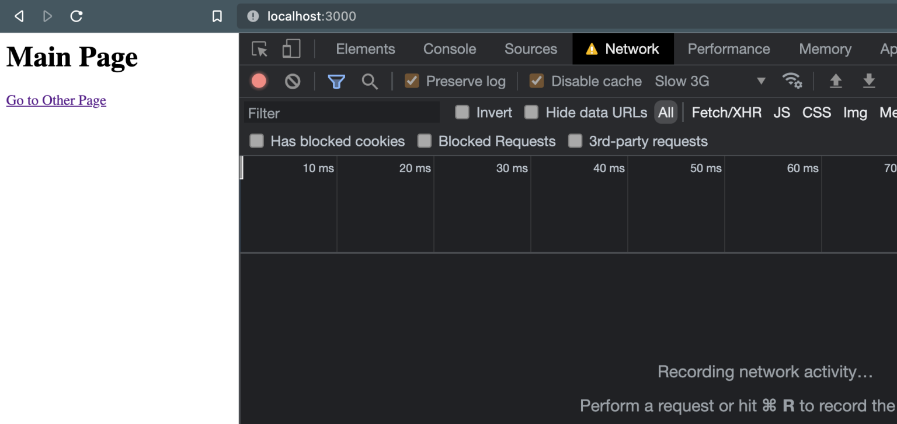
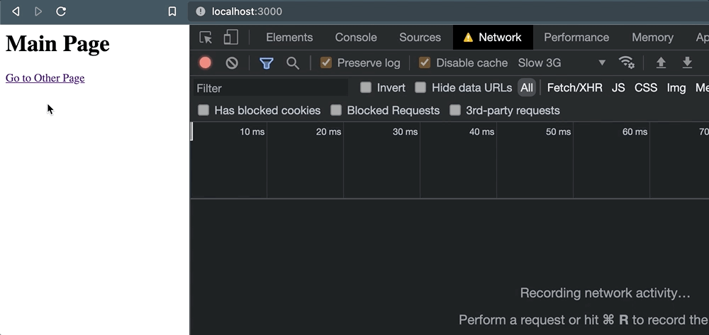
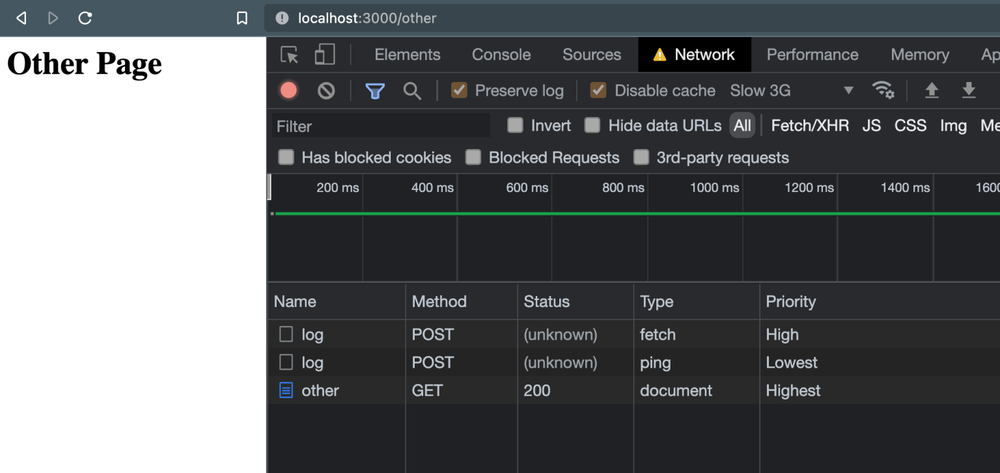

사용자가 페이지를 떠날 때 안정적으로 HTTP 요청 보내기
이 글은 Alex AcArthur가 작성한 Reliably Send an HTTP Request as a User Leaves a Page를 번역한 글입니다 (CSS-Tricks 번역 정책 참고).
사용자가 다른 페이지로 이동하거나 양식을 제출하는 등의 행동을 할 때, 로깅할 데이터가 포함된 HTTP 요청을 전송해야 하는 경우가 여러 번 있었습니다. 링크를 클릭하면 일부 정보를 외부 서비스로 전송하는 예시를 생각해 보세요:
<a href="/some-other-page" id="link">Go to Page</a>
<script>
document.getElementById('link').addEventListener('click', (e) => {
fetch("/log", {
method: "POST",
headers: {
"Content-Type": "application/json"
},
body: JSON.stringify({
some: "data"
})
});
});
</script>여기에 크게 복잡한 건 없습니다.
보통 그렇듯이 (e.preventDefault()를 사용하지 않았습니다.) 링크는 정상적으로 동작하도록 했지만, 링크가 동작하기 전, click 시에 POST 요청이 발생합니다.
어떤 종류의 응답도 기다릴 필요가 없습니다.
어떤 결과를 받던지 단지 전송만 하기를 원합니다.
언뜻 보면, 해당 요청의 전송이 동기화된 것처럼 보이고, 그 후 다른 서버가 요청을 성공적으로 처리하는 동안 페이지를 계속 탐색할 것처럼 보입니다. 하지만 밝혀진 바로, 항상 그런 것은 아닙니다.
브라우저는 열린 HTTP 요청의 보존을 보장하지 않습니다.
무언가 브라우저의 페이지를 종료시킬 때, 진행 중인 HTTP 요청이 성공적으로 처리된다는 보장은 없습니다(페이지 생명 주기의 "terminated" 및 다른 상태 참고). 이런 종류의 요청의 신뢰성은 네트워크 연결, 애플리케이션 성능 및 외부 서비스 자체 설정과 같은 몇 가지 요소에 따라 달라질 수 있습니다.
따라서, 이러한 시점에 데이터를 전송하는 것은 결코 신뢰할 수 없으며, 이런 로그에 의존해 데이터에 민감한 비즈니스 의사결정을 내리게 되면 잠재적으로 큰 문제가 발생할 수 있습니다.
비신뢰성에 대한 설명을 위해 위 코드를 포함한 페이지가 있는 작은 Express 애플리케이션을 만들었습니다.
링크가 클릭되었을 때 브라우저는 /other로 이동합니다, 하지만 그전에 POST 요청이 발생합니다.
모든 과정 동안, 저는 브라우저의 네트워크 탭을 열어두고 연결 속도를 "Slow 3g"로 사용했습니다. 페이지를 로드하고 로그를 지웠습니다, 아무런 문제도 없는 것처럼 보입니다:

하지만 링크를 클릭하면 일이 꼬입니다. 페이지 이동이 발생할 때, 요청이 취소됩니다.

따라서 외부 서비스가 실제로 요청을 처리할 수 있었다는 확신을 할 수 없습니다.
이 동작을 확인하기 위해 window.location을 이용해 프로그래밍적으로 페이지를 이동해도 같은 문제가 발생합니다.
document.getElementById('link').addEventListener('click', (e) => {
+ e.preventDefault();
// 요청이 대기열에 들어갔지만, 페이지 이동이 일어나면서 취소됩니다.
fetch("/log", {
method: "POST",
headers: {
"Content-Type": "application/json"
},
body: JSON.stringify({
some: 'data'
}),
});
+ window.location = e.target.href;
});언제 어떻게 페이지 이동이 발생하고 활성 페이지가 종료되는 지와 관계없이, 이런 완료되지 않은 요청은 취소될 위험이 있습니다.
근데 왜 취소될까요?
근본적인 원인은, 기본적으로 XHR 요청(fetch 혹은 XMLHttpRequest에 의한)은 비동기적이고 블로킹이 없다는 것입니다.
요청이 대기열에 들어가자마자, 요청의 실제 작업은 백그라운드에서 브라우저 레벨의 API로 전달됩니다.
우리는 요청이 메인 스레드를 독차지하는 것을 원하지 않기 때문에 이는 성능 면에서 좋습니다. 하지만 이는 페이지가 "terminated" 상태가 될 때 요청이 버려질 위험이 있다는 것을 뜻하며, 그 어떤 백그라운드 작업도 완료된다는 보장이 없습니다. 여기 Google 이 라이프 사이클 상태에 대해 어떻게 요약했는지 보겠습니다:
브라우저 메모리에서 내려가고 지워지기 시작하면 페이지는 terminated 상태가 됩니다. 이 상태에서는 새로운 작업이 시작되지 않으며, 진행 중인 작업이 너무 오래 실행될 경우 중지될 수 있습니다.
간단히 말해서, 브라우저는 페이지가 삭제될 때, 페이지에 의해 대기 중인 백그라운드 프로세스를 계속 처리할 필요가 없다는 가정 하에 설계되었습니다.
그래서, 우리가 선택할 수 있는 건 무엇일까요?
아마 이 문제를 피하기 위한 가장 명확한 접근 방법은 요청이 응답을 반환할 때까지 사용자 작업을 지연시키는 것입니다.
예전에는, XMLHttpRequest에서 지원하는 synchronous 플래그를 사용하는 잘못된 방식으로 하곤 했습니다.
하지만 이를 사용하면 메인 스레드를 완전히 차단시키고, 여러 성능 문제가 발생합니다 - 저는 이런 문제에 대한 글을 작성했었습니다 - 그래서 이 방식은 고려할 필요도 없습니다.
사실, 이 기능은 플랫폼에서 제거되고 있습니다 (Chrome v80+에서는 이미 제거되었습니다.)
대신, 이런 접근 방식을 사용할 경우 응답이 반환되어 Promise 가 resolve 될 때까지 기다리는 것이 좋습니다.
다시 돌아온 후에는 안전하게 동작을 수행할 수 있습니다.
앞선 예제를 사용하면, 아래처럼 할 수 있습니다.
document.getElementById('link').addEventListener('click', async (e) => {
e.preventDefault();
// 응답이 돌아오기를 기다리고...
await fetch("/log", {
method: "POST",
headers: {
"Content-Type": "application/json"
},
body: JSON.stringify({
some: 'data'
}),
});
// ...나서 페이지를 이동한다.
window.location = e.target.href;
});이러면 작업을 완료할 수 있지만, 몇 가지 사소하지 않은 단점이 있습니다.
첫째, 원하는 동작이 발생하지 않도록 지연시킴으로써 사용자 경험을 손상시킵니다. 분석 데이터를 수집하는 것은 확실히 비즈니스(그리고 잠재적 사용자들)에게 이익이 되지만, 현재 사용자가 그 이익을 위해 비용을 지불하도록 하는 것은 이상적이지 않습니다. 말할 것도 없이, 외부 종속성에 의해, 그 서비스 자체가 가진 어떠한 지연이나 성능 문제가 사용자에게 보여지게 됩니다. 분석 서비스에서 타임아웃이 발생해서 고객이 중요한 작업을 하지 못하면 모든 사람이 손해를 보게 됩니다.
둘째, 몇몇 종료 동작은 프로그래밍 방식으로 지연시킬 수 없기 때문에 이런 접근은 앞에서 들었던 것처럼 신뢰할 수 없습니다.
예를 들어 e.preventDefault()는 브라우저 탭을 닫는 것을 지연시킬 때는 효과가 없습니다.
그래서 기껏해야, 일부 사용자 작업에 대한 데이터 수집은 커버할 수 있지만 종합적으로 신뢰할 수 있을 정도는 아닙니다.
브라우저에 미처리 요청을 보존하도록 지시하기
다행히, 미처리 HTTP 요청을 보존할 수 있는 옵션이 있고, 이는 대부분의 브라우저에 내장되어 있으며 사용자 경험을 손상시키지 않습니다.
Fetch 의 `keepalive` 플래그 사용하기fetch()를 사용할 때 keepalive 플래그가 true로 설정되어 있으면, 해당 요청을 시작한 페이지가 종료되더라도 해당 요청이 열린 상태로 유지됩니다.
처음 예제를 사용하면 다음과 같이 구현할 수 있습니다.
<a href="/some-other-page" id="link">Go to Page</a>
<script>
document.getElementById('link').addEventListener('click', (e) => {
fetch("/log", {
method: "POST",
headers: {
"Content-Type": "application/json"
},
body: JSON.stringify({
some: "data"
}),
keepalive: true
});
});
</script>해당 링크를 클릭하고 페이지 이동이 발생해도, 요청 취소가 발생하지 않습니다:

대신, (unknown) 상태가 남게 되는데, 단순히 활성 페이지가 어떤 종료의 응답도 기다리지 않기 때문입니다.
특히, 일반적으로 사용되는 브라우저 API의 일부인 경우 이와 같이 한 줄이면 쉽게 해결할 수 있습니다. 그러나 더 단순한 인터페이스를 가진 더 집중적인 옵션을 찾고 있다면, 브라우저 지원을 받는 다른 방법도 있습니다.
`Navigator.sendBeacon()` 사용하기Navigator.sendBeacon() 함수는 단방향 요청을 전송하기 위해 특별히 고안되었습니다 (beacons).
기본 구현은 다음과 같습니다. 직렬화된 JSON 과 “text/plain” Content-Type 을 포함한 POST 요청을 전송합니다:
navigator.sendBeacon('/log', JSON.stringify({
some: "data"
}));하지만, 이 API는 커스텀 헤더를 보내도록 허용하지 않습니다.
그래서, 데이터를 “application/json” 로 전송하려면 Blob을 사용해 약간 수정해서 사용해야 합니다:
<a href="/some-other-page" id="link">Go to Page</a>
<script>
document.getElementById('link').addEventListener('click', (e) => {
const blob = new Blob([JSON.stringify({ some: "data" })], { type: 'application/json; charset=UTF-8' });
navigator.sendBeacon('/log', blob);
});
</script>결국, 동일한 결과를 얻을 수 있습니다 - 페이지 이동 후에도 요청을 완료할 수 있습니다.
하지만 fetch() 보다 나은 점이 있습니다: 비콘은 낮은 우선순위로 전송됩니다.
설명을 위해, 여기 keepalive 가 있는 fetch()와 sendBeacon()이 동시에 사용될 때 네트워크 탭에 표시되는 것입니다:
기본적으로, fetch()는 “High” 우선 순위를 받는 반면, 비콘은(위에서 “ping” 유형으로 표시됨)은 “Lowest” 우선 순위를 가집니다.
페이지 기능에 중요하지 않은 요청의 경우 이 방법은 좋습니다.
Beacon 스펙에서 발췌한 내용입니다:
이 스펙은 다음 인터페이스를 정의합니다 […] 시간적으로 중요한 다른 작업과 리소스 경합을 최소화하면서 요청이 계속 처리되고 대상으로 전달되도록 보장합니다.
다른 말로하면, sendBeacon() 은 그 요청이 애플리케이션에 중요한 것들과 사용자 경험에 관여하지 않도록 합니다.
`ping` 속성에 대한 훌륭한 언급
점점 더 많은 브라우저들이 ping 속성을 지원한다는 것을 언급할 가치가 있습니다.
링크에 사용되면 이는 작은 POST 요청을 전송합니다.
<a href="http://localhost:3000/other" ping="http://localhost:3000/log">
Go to Other Page
</a>이 요청 헤더에는 링크가 클릭된 페이지(ping-from)와 해당 링크의 href 값(ping-to)이 포함됩니다:
headers: {
'ping-from': 'http://localhost:3000/',
'ping-to': 'http://localhost:3000/other'
'content-type': 'text/ping'
// ...다른 헤더들
},이는 비콘 전송과 기술적으로 유사하지만, 주목할 만한 제한사항이 있습니다.
링크에서만 사용할 수 있도록 엄격하게 제한되므로, 버튼클릭이나 양식 제출과 같은 다른 상호작용과 관련된 데이터를 추적해야 하는 경우 사용할 수 없습니다.
브라우저 지원이 나쁘지는 않지만, 아주 좋지는 않습니다. 글을 작성하는 현재, Firefox는 기본적으로 이를 사용하지 않도록 설정되어 있습니다.
요청과 함께 커스텀 데이터를 보낼수 없습니다. 언급한 바와 같이 몇가지 ping-* 헤더와 몇가지 다른 헤더를 같이 얻을 수 있습니다.
모든 것을 고려해 볼 때, ping 은 간단한 요청으로 충분하고 커스텀 JavaScript 를 작성하지 않으려는 경우 좋은 방법입니다.
하지만 더 중요한 것을 보내야한다면, 가장 좋은 방법은 아닐 수 있습니다.
그래서 어떤것을 사용해야 할까요?
keepalive와 함께 fetch를 사용하거나 sendBeacon()을 사용하여 마지막 요청을 전송하는 것에는 분명한 트레이드오프가 있습니다.
다양한 상황에 가장 적합한 항목을 식별하기 위해 고려해야 할 몇 가지 사항은 다음과 같습니다:
요청과 함께 커스텀 헤더를 쉽게 전달해야 합니다.
서비스에
POST가 아닌GET요청을 하려고 합니다.예전 브라우저(IE 같은)를 지원하고 있으며 이미
fetch폴리필이 로드되어 있습니다.
커스텀이 많이 필요하지 않은 간단한 서비스 요청을 하고 있습니다.
깔끔하고 우아한 API 를 선호합니다.
요청이 애플리케이션에서 발송되는 다른 높은 우선순위의 요청과 경쟁하지 않도록 보장하려 합니다
제 실수를 반복하지 마세요
페이지가 종료될 때 브라우저가 처리 중인 요청을 다루는 방식에 대해서 자세히 알아보기로 한 이유가 있습니다. 얼마 전, 우리 팀은 양식을 제출할 때 요청을 실행하기 시작한 후 갑자기 특정 유형의 분석 로그 빈도가 변하는 것을 보았습니다. 이 변화는 갑작스러웠고 중요했습니다 - 과거에 보았던 것보다 약 ~30% 감소했습니다.
이 문제가 발생한 이유와 이를 피할 수 있는 도구를 파헤쳐 곤경을 면할 수 있었습니다. 그래서, 저는 이런 도전들의 뉘앙스를 이해하는 것이 누군가 우리가 마주친 고통의 일부를 피하는데 도움이 되기를 바랍니다. Happy logging!